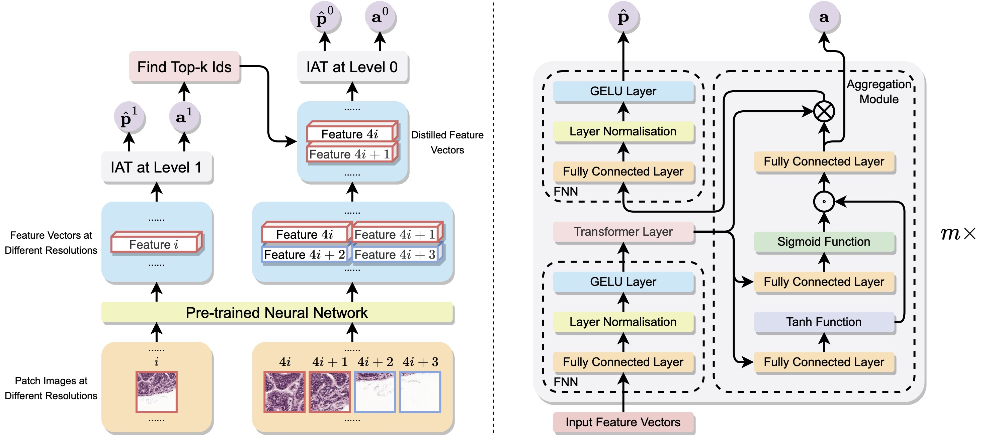

Conghao XIONGPh.D. Candidate
Department of Computer Science and Engineering 


|
|
Biography
I am a fourth-year PhD candidate in Computer Science at The Chinese University of Hong Kong (CUHK), supervised by Prof. Irwin King, Prof. Joseph J. Y. Sung and Prof. Hao Chen. Prior to my doctoral studies at CUHK, I was a visiting and research student at the Johns Hopkins University (JHU) under the supervision of Prof. Philipp Koehn, and a visiting student at the University of Cambridge. I obtained my B. Eng. of Computer Science degree from Harbin Institute of Technology (HIT), where I have been closely working with Prof. Weinan Zhang.
At present, I primarily focus on the following research topics: Few Shot Learning, Federated Learning, and Multimodal Learning, particularly those in Computational Pathology.
Welcome ALL forms of collaboration. Feel free to reach out to me via email!
- [05/2025] I was recognized as an ICLR 2025 Notable Reviewer!
- [04/2025] Our survey on pathology foundation models was accepted by IJCAI 2025 Survey Track. See you in Guangzhou!
- [02/2025] Heading to NTU, Singapore, on March!
- [02/2025] One paper was accepted by CVPR 2025, congratulations to Zhengrui!
- [10/2024] I was awarded as an IEEE TMI Distinguished Reviewer!
- [07/2024] I have received the PhD IMPAC Award from CUHK supporting my visit to NTU!
- [06/2024] One paper was accepted by MICCAI 2024!
-
[05/2024] One paper on mixture of multimodal experts was
early accepted (11%)
by MICCAI 2024!
Selected Publications [Google Scholar]
| A Survey of Pathology Foundation Model: Progress and Future Directions Conghao Xiong, Hao Chen, Joseph J. Y. Sung IJCAI Survey Track, 2025 (19.6%) . |
|
| FOCUS: Knowledge-enhanced Adaptive Visual Compression for Few-shot Whole Slide Image Classification Zhengrui Guo, Conghao Xiong, Jiabo Ma, Qichen Sun, Lishuang Feng, Jinzhuo Wang, Hao Chen CVPR, 2025. [Codes] |
|
| MoME: Mixture of Multimodal Experts for Cancer Survival Prediction Conghao Xiong, Hao Chen, Hao Zheng, Dong Wei, Yefeng Zheng, Joseph J. Y. Sung, Irwin King MICCAI, 2024 (Early Accepted, 11%) . |
|

|
TAKT: Target-Aware Knowledge Transfer for Whole Slide Image Classification Conghao Xiong*, Yi Lin*, Hao Chen, Hao Zheng, Dong Wei, Yefeng Zheng, Joseph J. Y. Sung, Irwin King MICCAI, 2024. [Codes] |
|  | Diagnose Like a Pathologist: Transformer-Enabled Hierarchical Attention-Guided Multiple Instance Learning for Whole Slide Image Classification Conghao Xiong, Hao Chen, Joseph J. Y. Sung, Irwin King IJCAI, 2023 (14.8%) .[Codes] |
| Mo1243 Prediction of Gastric Cancer Development from Intestinal Metaplasia Using Deep Learning Model in Gastric Biopsies Conghao Xiong, Ronald C. K. Chan, Hao Chen, Louis H. S. Lau, Irwin King, Joseph J. Y. Sung Gastroenterology, 2023. |
|
| Embedding-Enhanced GIZA++: Improving Low-Resource Word Alignment Using Embeddings Kelly Marchisio, Conghao Xiong, Philipp Koehn Biennial conference of the Association for Machine Translation in the Americas, 2022. [Codes] |
|
Academic Services
-
Conference Reviews:
International Conference on Computer Vision (ICCV)
International Conference on Medical Image Computing and Computer Assisted Intervention (MICCAI)
International Conference on Learning Representations (ICLR)
Conference on Computer Vision and Pattern Recognition (CVPR)
Conference on Neural Information Processing Systems (NeurIPS)
International Joint Conference on Artificial Intelligence (IJCAI)
ACM International Conference on Web Search and Data Mining (WSDM)
European Conference on Machine Learning and Principles and Practice of Knowledge Discovery in Databases (ECML-PKDD)
-
Journal Reviews:
International Journal of Computer Vision (IJCV)
IEEE Transactions on Medical Imaging (TMI) (Distinguished Reviewer)
Medical Image Analysis (MedIA)
Information Fusion
IEEE Journal of Biomedical and Health Informatics (IEEE JBHI)
International Journal of Data Science and Analytics (JDSA)
IEEE Transactions on Neural Networks and Learning Systems (TNNLS)
Teaching
| CUHK | 2022 | Spring | Computers and Society (CSCI3250) |
| CUHK | 2021 | Fall | Introduction to Python (CSCI2040) |
© Conghao Xiong | Last updated: May 2025